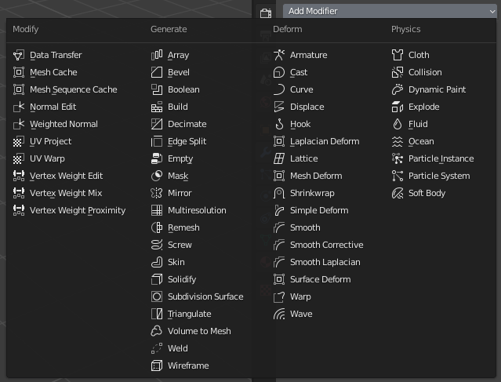
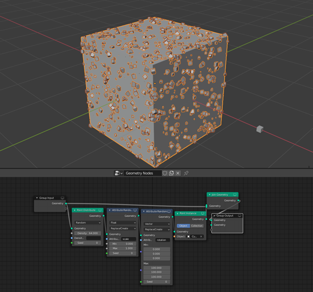

MENU
NAČINI INTERAKCIJE
Primitive
Blender podpira različne geometrijske primitive (geometric primitives), vključno z poligonskimi mrežami (polygon meshes),
hitrim modeliranjem površin z delitvijo (fast subdivison surface modeling), Bezierjevimi krivuljami (Bezier curves), NURBS površinami (NURBS surfaces),
metažogami (metaballs), icokrogle (icospheres), besedilom in n-gon sistemom za modeliranje (n-gon modeling system), ki se imenuje B-mesh.
Modifikatorji
Modifikatorji dodajo različne neuničljive efekte, ki se lahko uporabljajo pri izvozu in upodabljanju.

Kiparstvo
Blender vsebuje veliko orodij za kiparstvo kot npr. dinamično topologijo, maps baking, remeshing, re-symmetrize in decimation.
Prej navedene stvari se uporabljajo za poenostavitev modelov za namen izvoza, kot npr. za uporabo v igri. Kiparimo lahko v Sculpt mode, ki je omenjen pri
Načinih interakcije.
Geometrijske node
Blenderjeve geometrijske node ali vozlišča je sistem, ki temelji na vozliščih za proceduralno in neuničljivo ustvarjanje in manipulacijo geometrije.
Prvič je bil dodan v verziji 2.92, ki se osredotoča na razprševanje in instanciranje/instancing predmetov.
Možno ga je zlagati na različne modifikatorje, saj ima tako obliko. Sistem uporablja lastnosti predmetov, ki jih je mogoče spreminjati in nadomeščati z vnosom nizov.
Lastnosti lahko vključujejo položajne, normalne in UV zemljevide. Vse lastnosti si lahko ogledamo v urejevalniku razpredelnic lastnosti.
Geometrijska vozlišča imajo tudi zmožnost ustvarjanja primitivnih mrež/mesh, kot so npr. kocke, krogle, icokrogle/icosphere in valji.
Na spodnji sliki je primer geometrijskih nod. Prikazuje uporabo geometry node editorja in kako je manjša kocka uporabljena kot podrobnost na kocki.

Modeliranje trdih površin
Modeliranje trdih površin se običajno uporablja za oblikovanje trdih površin kot so avtomobili in stroji.
Običajno se izvaja na neuničljiv način, pri katerem uporabimo čim več modifikatorjev. Lahko tudi na uničljiv način.